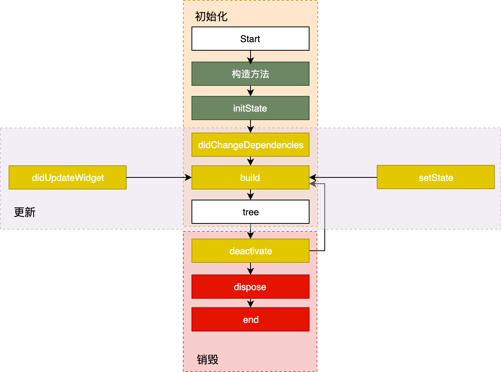
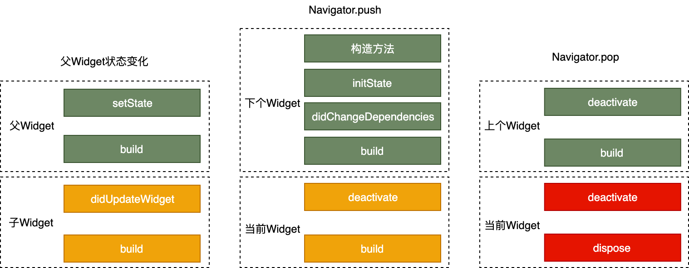
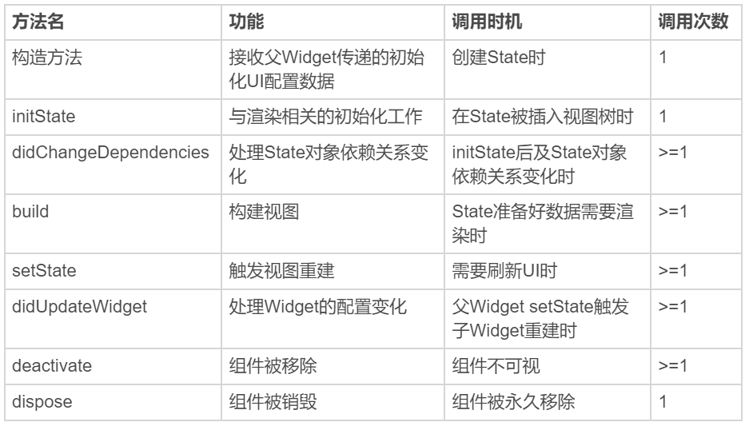
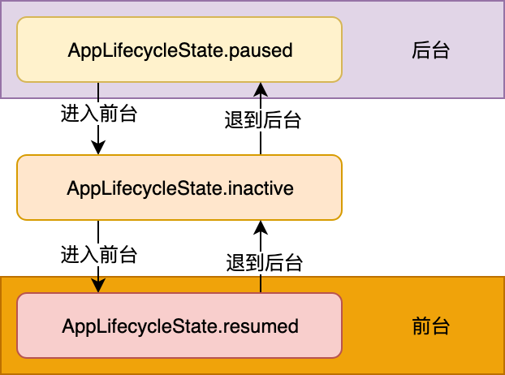

- 00 开篇词 为什么每一位大前端从业者都应该学习Flutter？.md
- 01 预习篇 · 从0开始搭建Flutter工程环境.md
- 02 预习篇 · Dart语言概览.md
- 03 深入理解跨平台方案的历史发展逻辑.md
- 04 Flutter区别于其他方案的关键技术是什么？.md
- 05 从标准模板入手，体会Flutter代码是如何运行在原生系统上的.md
- 06 基础语法与类型变量：Dart是如何表示信息的？.md
- 07 函数、类与运算符：Dart是如何处理信息的？.md
- 08 综合案例：掌握Dart核心特性.md
- 09 Widget，构建Flutter界面的基石.md
- 10 Widget中的State到底是什么？.md
- 11 提到生命周期，我们是在说什么？.md
- 12 经典控件（一）：文本、图片和按钮在Flutter中怎么用？.md
- 13 经典控件（二）：UITableView_ListView在Flutter中是什么？.md
- 14 经典布局：如何定义子控件在父容器中排版的位置？.md
- 15 组合与自绘，我该选用何种方式自定义Widget？.md
- 16 从夜间模式说起，如何定制不同风格的App主题？.md
- 17 依赖管理（一）：图片、配置和字体在Flutter中怎么用？.md
- 18 依赖管理（二）：第三方组件库在Flutter中要如何管理？.md
- 19 用户交互事件该如何响应？.md
- 20 关于跨组件传递数据，你只需要记住这三招.md
- 21 路由与导航，Flutter是这样实现页面切换的.md
- 22 如何构造炫酷的动画效果？.md
- 23 单线程模型怎么保证UI运行流畅？.md
- 24 HTTP网络编程与JSON解析.md
- 25 本地存储与数据库的使用和优化.md
- 26 如何在Dart层兼容Android_iOS平台特定实现？（一）.md
- 27 如何在Dart层兼容Android_iOS平台特定实现？（二）.md
- 28 如何在原生应用中混编Flutter工程？.md
- 29 混合开发，该用何种方案管理导航栈？.md
- 30 为什么需要做状态管理，怎么做？.md
- 31 如何实现原生推送能力？.md
- 32 适配国际化，除了多语言我们还需要注意什么_.md
- 33 如何适配不同分辨率的手机屏幕？.md
- 34 如何理解Flutter的编译模式？.md
- 35 Hot Reload是怎么做到的？.md
- 36 如何通过工具链优化开发调试效率？.md
- 37 如何检测并优化Flutter App的整体性能表现？.md
- 38 如何通过自动化测试提高交付质量？.md
- 39 线上出现问题，该如何做好异常捕获与信息采集？.md
- 40 衡量Flutter App线上质量，我们需要关注这三个指标.md
- 41 组件化和平台化，该如何组织合理稳定的Flutter工程结构？.md
- 42 如何构建高效的Flutter App打包发布环境？.md
- 43 如何构建自己的Flutter混合开发框架（一）？.md
- 44 如何构建自己的Flutter混合开发框架（二）？.md
- 特别放送 温故而知新，与你说说专栏的那些思考题.md
- 结束语 勿畏难，勿轻略.md
11 提到生命周期，我们是在说什么？
你好，我是陈航。今天，我要和你分享的主题是Flutter中的生命周期是什么。
在上一篇文章中，我们从常见的StatefulWidget的“万金油”误区出发，一起回顾了Widget的UI更新机制。
通过父Widget初始化时传入的静态配置，StatelessWidget就能完全控制其静态展示。而StatefulWidget，还需要借助于State对象，在特定的阶段来处理用户的交互或其内部数据的变化，并体现在UI上。这些特定的阶段，就涵盖了一个组件从加载到卸载的全过程，即生命周期。与iOS的ViewController、Android的Activity一样，Flutter中的Widget也存在生命周期，并且通过State来体现。
而App则是一个特殊的Widget。除了需要处理视图显示的各个阶段（即视图的生命周期）之外，还需要应对应用从启动到退出所经历的各个状态（App的生命周期）。
对于开发者来说，无论是普通Widget（的State）还是App，框架都给我们提供了生命周期的回调，可以让我们选择恰当的时机，做正确的事儿。所以，在对生命周期有了深入理解之后，我们可以写出更加连贯流畅、体验优良的程序。
那么，今天我就分别从Widget（的State）和App这两个维度，与你介绍它们的生命周期。
State生命周期
State的生命周期，指的是在用户参与的情况下，其关联的Widget所经历的，从创建到显示再到更新最后到停止，直至销毁等各个过程阶段。
这些不同的阶段涉及到特定的任务处理，因此为了写出一个体验和性能良好的控件，正确理解State的生命周期至关重要。
State的生命周期流程，如图1所示：

图1 State生命周期图
可以看到，State的生命周期可以分为3个阶段：创建（插入视图树）、更新（在视图树中存在）、销毁（从视图树中移除）。接下来，我们一起看看每一个阶段的具体流程。
创建
State初始化时会依次执行 ：构造方法 -> initState -> didChangeDependencies -> build，随后完成页面渲染。
我们来看一下初始化过程中每个方法的意义。
- 构造方法是State生命周期的起点，Flutter会通过调用StatefulWidget.createState() 来创建一个State。我们可以通过构造方法，来接收父Widget传递的初始化UI配置数据。这些配置数据，决定了Widget最初的呈现效果。
- initState，会在State对象被插入视图树的时候调用。这个函数在State的生命周期中只会被调用一次，所以我们可以在这里做一些初始化工作，比如为状态变量设定默认值。
- didChangeDependencies则用来专门处理State对象依赖关系变化，会在initState() 调用结束后，被Flutter调用。
- build，作用是构建视图。经过以上步骤，Framework认为State已经准备好了，于是调用build。我们需要在这个函数中，根据父Widget传递过来的初始化配置数据，以及State的当前状态，创建一个Widget然后返回。
更新
Widget的状态更新，主要由3个方法触发：setState、didchangeDependencies与didUpdateWidget。
接下来，我和你分析下这三个方法分别会在什么场景下调用。
- setState：我们最熟悉的方法之一。当状态数据发生变化时，我们总是通过调用这个方法告诉Flutter：“我这儿的数据变啦，请使用更新后的数据重建UI！”
- didChangeDependencies：State对象的依赖关系发生变化后，Flutter会回调这个方法，随后触发组件构建。哪些情况下State对象的依赖关系会发生变化呢？典型的场景是，系统语言Locale或应用主题改变时，系统会通知State执行didChangeDependencies回调方法。
- didUpdateWidget：当Widget的配置发生变化时，比如，父Widget触发重建（即父Widget的状态发生变化时），热重载时，系统会调用这个函数。
一旦这三个方法被调用，Flutter随后就会销毁老Widget，并调用build方法重建Widget。
销毁
组件销毁相对比较简单。比如组件被移除，或是页面销毁的时候，系统会调用deactivate和dispose这两个方法，来移除或销毁组件。
接下来，我们一起看一下它们的具体调用机制：
- 当组件的可见状态发生变化时，deactivate函数会被调用，这时State会被暂时从视图树中移除。值得注意的是，页面切换时，由于State对象在视图树中的位置发生了变化，需要先暂时移除后再重新添加，重新触发组件构建，因此这个函数也会被调用。
- 当State被永久地从视图树中移除时，Flutter会调用dispose函数。而一旦到这个阶段，组件就要被销毁了，所以我们可以在这里进行最终的资源释放、移除监听、清理环境，等等。
如图2所示，左边部分展示了当父Widget状态发生变化时，父子双方共同的生命周期；而中间和右边部分则描述了页面切换时，两个关联的Widget的生命周期函数是如何响应的。

图2 几种常见场景下State生命周期图
我准备了一张表格，从功能，调用时机和调用次数的维度总结了这些方法，帮助你去理解、记忆。

图3 State生命周期中的方法调用对比
另外，我强烈建议你打开自己的IDE，在应用模板中增加以上回调函数并添加打印代码，多运行几次看看各个函数的执行顺序，从而加深对State生命周期的印象。毕竟，实践出真知。
App生命周期
视图的生命周期，定义了视图的加载到构建的全过程，其回调机制能够确保我们可以根据视图的状态选择合适的时机做恰当的事情。而App的生命周期，则定义了App从启动到退出的全过程。
在原生Android、iOS开发中，有时我们需要在对应的App生命周期事件中做相应处理，比如App从后台进入前台、从前台退到后台，或是在UI绘制完成后做一些处理。
这样的需求，在原生开发中，我们可以通过重写Activity、ViewController生命周期回调方法，或是注册应用程序的相关通知，来监听App的生命周期并做相应的处理。而在Flutter中，我们可以利用WidgetsBindingObserver类，来实现同样的需求。
接下来，我们就来看看具体如何实现这样的需求。
首先，我们来看看WidgetsBindingObserver中具体有哪些回调函数：
abstract class WidgetsBindingObserver {
//页面pop
Future<bool> didPopRoute() => Future<bool>.value(false);
//页面push
Future<bool> didPushRoute(String route) => Future<bool>.value(false);
//系统窗口相关改变回调，如旋转
void didChangeMetrics() { }
//文本缩放系数变化
void didChangeTextScaleFactor() { }
//系统亮度变化
void didChangePlatformBrightness() { }
//本地化语言变化
void didChangeLocales(List<Locale> locale) { }
//App生命周期变化
void didChangeAppLifecycleState(AppLifecycleState state) { }
//内存警告回调
void didHaveMemoryPressure() { }
//Accessibility相关特性回调
void didChangeAccessibilityFeatures() {}
}
可以看到，WidgetsBindingObserver这个类提供的回调函数非常丰富，常见的屏幕旋转、屏幕亮度、语言变化、内存警告都可以通过这个实现进行回调。我们通过给WidgetsBinding的单例对象设置监听器，就可以监听对应的回调方法。
考虑到其他的回调相对简单，你可以参考官方文档，对照着进行练习。因此，我今天主要和你分享App生命周期的回调didChangeAppLifecycleState，和帧绘制回调addPostFrameCallback与addPersistentFrameCallback。
生命周期回调
didChangeAppLifecycleState回调函数中，有一个参数类型为AppLifecycleState的枚举类，这个枚举类是Flutter对App生命周期状态的封装。它的常用状态包括resumed、inactive、paused这三个。
- resumed：可见的，并能响应用户的输入。
- inactive：处在不活动状态，无法处理用户响应。
- paused：不可见并不能响应用户的输入，但是在后台继续活动中。
这里，我来和你分享一个实际案例。
在下面的代码中，我们在initState时注册了监听器，在didChangeAppLifecycleState回调方法中打印了当前的App状态，最后在dispose时把监听器移除：
class _MyHomePageState extends State<MyHomePage> with WidgetsBindingObserver{//这里你可以再回顾下，第7篇文章“函数、类与运算符：Dart是如何处理信息的？”中关于Mixin的内容
...
@override
@mustCallSuper
void initState() {
super.initState();
WidgetsBinding.instance.addObserver(this);//注册监听器
}
@override
@mustCallSuper
void dispose(){
super.dispose();
WidgetsBinding.instance.removeObserver(this);//移除监听器
}
@override
void didChangeAppLifecycleState(AppLifecycleState state) async {
print("$state");
if (state == AppLifecycleState.resumed) {
//do sth
}
}
}
我们试着切换一下前、后台，观察控制台输出的App状态，可以发现：
- 从后台切入前台，控制台打印的App生命周期变化如下: AppLifecycleState.paused->AppLifecycleState.inactive->AppLifecycleState.resumed；
- 从前台退回后台，控制台打印的App生命周期变化则变成了：AppLifecycleState.resumed->AppLifecycleState.inactive->AppLifecycleState.paused。
可以看到，App前后台切换过程中打印出的状态是完全符合预期的。

图4 App切换前后台状态变化示意
帧绘制回调
除了需要监听App的生命周期回调做相应的处理之外，有时候我们还需要在组件渲染之后做一些与显示安全相关的操作。
在iOS开发中，我们可以通过dispatch_async(dispatch_get_main_queue(),^{…})方法，让操作在下一个RunLoop执行；而在Android开发中，我们可以通过View.post()插入消息队列，来保证在组件渲染后进行相关操作。
其实，在Flutter中实现同样的需求会更简单：依然使用万能的WidgetsBinding来实现。
WidgetsBinding提供了单次Frame绘制回调，以及实时Frame绘制回调两种机制，来分别满足不同的需求：
- 单次Frame绘制回调，通过addPostFrameCallback实现。它会在当前Frame绘制完成后进行进行回调，并且只会回调一次，如果要再次监听则需要再设置一次。
WidgetsBinding.instance.addPostFrameCallback((_){
print("单次Frame绘制回调");//只回调一次
});
- 实时Frame绘制回调，则通过addPersistentFrameCallback实现。这个函数会在每次绘制Frame结束后进行回调，可以用做FPS监测。
WidgetsBinding.instance.addPersistentFrameCallback((_){
print("实时Frame绘制回调");//每帧都回调
});
总结
在今天这篇文章中，我和你介绍了State和App的生命周期，这是Flutter给我们提供的，感知Widget和应用在不同阶段状态变化的回调。
首先，我带你重新认识了Widget生命周期的实际承载者State。我将State的生命周期划分为了创建（插入视图树）、更新（在视图树中存在）、销毁（从视图树种移除）这3个阶段，并为你介绍了每个阶段中涉及的关键方法，希望你能够深刻理解Flutter组件从加载到卸载的完整周期。
然后，通过与原生Android、iOS平台能力的对比，以及查看WidgetsBindingObserver源码的方式，我与你讲述了Flutter常用的生命周期状态切换机制。希望你能掌握Flutter的App生命周期监听方法，并理解Flutter常用的生命周期状态切换机制。
最后，我和你一起学习了Flutter帧绘制回调机制，理解了单次Frame绘制回调与实时Frame绘制回调的异同与使用场景。
为了能够精确地控制Widget，Flutter提供了很多状态回调，所以今天这一篇文章，涉及到的方法有些多。但，只要你分别记住创建、更新与销毁这三条主线的调用规则，就一定能把这些方法的调用顺序串起来，并能在实际开发中运用正确的方法去感知状态变更，写出合理的组件。
我把今天分享所涉及的全部知识点打包成了一个小项目，你可以下载后在工程中实际运行，并对照着今天的课程学习，体会在不同场景下这些函数的调用时机。
思考题
最后，请你思考下这两个问题：
- 构造方法与initState函数在State的生命周期中都只会被调用一次，也大都用于完成一些初始化的工作。根据我们今天的学习，你能否举出例子，比如哪些操作适合放在构造方法，哪些操作适合放在initState，而哪些操作必须放在initState。
- 通过didChangeDependencies触发Widget重建时，父子Widget之间的生命周期函数调用时序是怎样的？
欢迎你在评论区给我留言分享你的观点，我会在下一篇文章中等待你！感谢你的收听，也欢迎你把这篇文章分享给更多的朋友一起阅读。
© 2019 - 2023 Liangliang Lee. Powered by gin and hexo-theme-book.